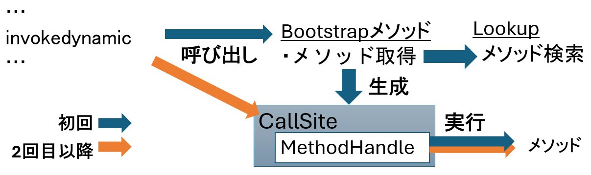

class: center, middle # InvokeDynamic, # Under the Hood <!-- Agenda はあえて出さない --> --- class: center, middle # javap <span style="font-size: 24pt;">してますか?</span> --- # javap - クラスファイル解析ツール - クラスやメソッドの情報抽出 - バイトコード解析 --- ```Java public class Foo { public static void main(String... args) { System.out.println("ABC" + "DEF"); } } ``` コンパイルして、javapしてみると... -- ```console > javac Foo.java > javap Foo Compiled from "Foo.java" public class Foo { public Foo(); public static void main(java.lang.String...); } ``` --- ```console > javap -c Foo -c: 逆コンパイルオプション Compiled from "Foo.java" public class Foo { public Foo(); Code: 0: aload_0 1: invokespecial #1 // Method "init":()V 4: return public static void main(java.lang.String...); Code: 0: getstatic #7 // Field System.out 3: ldc #13 // String ABCDEF 5: invokevirtual #15 // Method println:(LString;)V 8: return } ``` --- <span style="width: 50%; height: 200px; position: absolute; top: 65%; left: 50%; color: #ec7e31;">コンパイル時にリテラル連結</span> ```console > javap -c Foo -c: 逆コンパイルオプション Compiled from "Foo.java" public class Foo { public Foo(); Code: 0: aload_0 1: invokespecial #1 // Method "init":()V 4: return public static void main(java.lang.String...); Code: 0: getstatic #7 * 3: ldc #13 // String ABCDEF 5: invokevirtual #15 // Method println:(LString;)V 8: return } ``` --- <span style="width: 50%; height: 200px; position: absolute; top: 32%; left: 50%; color: #ec7e31;">invokeXXXでメソッドコール</span> ```console > javap -c Foo -c: 逆コンパイルオプション Compiled from "Foo.java" public class Foo { public Foo(); Code: 0: aload_0 * 1: invokespecial #1 // Method "init":()V 4: return public static void main(java.lang.String...); Code: 0: getstatic #7 // Field System.out 3: ldc #13 // String ABCDEF * 5: invokevirtual #15 // Method println:(LString;)V 8: return } ``` --- では、これでは ```Java public class Foo { public static void main(String... args) { var x = "ABC"; var y = "DEF"; System.out.println(x + y); } } ``` --- ```console > javap -c Foo ... public static void main(java.lang.String...); Code: 0: ldc #7 // String ABC 2: astore_1 3: ldc #7 // String DEF 5: astore_2 6: getstatic #9 // Field System.out 9: aload_1 10: aload_2 * 11: invokedynamic #15, 0 16: invokevirtual #19 // Method println:(LString;)V 19: return } ``` --- class: center ### ### ### メソッドコールをしていないのに ### invokeで始まるバイトコード??? -- # 本日の主役: invokeDynamic --- ## invokeDynamic - あとから追加された唯一のバイトコード (Java 7) -- - メソッドコール用バイトコード - invokeVirtual: インスタンスメソッド - invokeStatic: クラスメソッド - invokeInterface: インタフェース定義メソッド - invokeSpecial: コンストラクタなど -- - **invokeDynamic: 動的メソッドディスパッチ** -- <div style="font-size: 48px; font-weight: bold; text-align: center;">どういうこと?</div> --- ## 時はさかのぼって... - 2000年代初頭: JVM言語の興隆 -- <table style="border: none; width: 80%; margin-left: 20%; margin-right: 10%;"> <tr> <td>JRuby</td> <td>Jython</td> </tr> <tr> <td>Scala</td> <td>Rhino (JavaScript)</td> </tr> <tr> <td>Groovy</td> <td>et al.</td> </tr> </table> -- - 静的型付け言語だとバイトコードに割り当てやすい - 問題は動的型付けの言語 --- ## 動的型付け言語におけるメソッドコール - 型が実行時にならないと決まらない - コールするメソッドも実行時にならないと決まらない <table style="width: 90%; margin-left: 10%;"> <tr> <td style="width: 35%;"> </td> <td> </td> </tr> <tr> <td>x.do(a, b);</td> <td> </td> </tr> <tr> <td> </td> <td> </td> </tr> </table> --- ## 動的型付け言語におけるメソッドコール - 型が実行時にならないと決まらない - コールするメソッドも実行時にならないと決まらない <table style="width: 90%; margin-left: 10%;"> <tr> <td style="width: 35%;"> </td> <td>Foo.do(int a, int b) {...}</td> </tr> <tr> <td>x.do(a, b);</td> <td> </td> </tr> <tr> <td style="color: #ec7e31;">xはFoo? Bar?</td> <td>Bar.do(String a, String b) {...}</td> </tr> </table> -- - 実行時にコールするメソッドを決定 -- <span style="width: 80px; height: 60px; position: absolute; top: 77%; left: 20%;"><image src="images/arrow.png" /></span> <span style="width: 500px; height: 60px; position: absolute; top: 77%; left: 30%;">動的メソッドディスパッチ</span> --- ## そこで動いたのが... -- <table style="width: 90%; margin-left: 5%; border: none; text-align: center;"> <tr> <td style="width: 40%;"><image style="width: 360px;" src="images/nutter.jpg" /></td> <td style="width: 45%;"> </td> </tr> <tr> <td style="width: 40%; font-size: 24pt;">JRuby作者 Charles Nutter</td> <td style="width: 45%; font-size: 24pt;"> </td> </tr> </table> --- ## そこで動いたのが... <table style="width: 90%; margin-left: 5%; border: none; text-align: center;"> <tr> <td style="width: 40%;"><image style="width: 360px;" src="images/nutter.jpg" /></td> <td style="width: 45%;"><image style="width: 360px;" src="images/rose.jpg" /></td> </tr> <tr> <td style="width: 40%; font-size: 24pt;">JRuby作者 Charles Nutter</td> <td style="width: 45%; font-size: 24pt;">John Rose (Sun, 現Oracle)</td> </tr> </table> --- ## Da Vince Machine Project <image style="position: absolute; width: 306px; top: 0%; left: 75%;" src="images/DukeHeliRuby.png" /> - JVMをJava以外の言語にも広げることを目的 - 2007年に活動開始 -- - Project Lead: John Rose -- <br /> <table style="width: 90%; margin-left: 5%; margin-right: 5%; text-align: left; vertical-align: top;"> <tr> <td colspan="2" style="width: 20%; vertical-align: top;">JSR 292: </td> <td style="width: 80%; vertical-align: top;">Supporting Dynamically Typed Languageon the Java Platform</td> </tr> <tr> <td style="width: 10%"> </td> <td colspan="2">2011年 invokeDynamic 導入 (Java 7)</td> </tr> </table> --- background-image: url(images/oracleauditorium2.jpg) ## ちょっと脱線: JVM Language Summit - Da Vince Project主催のJVMに特化したカンファレンス - 2008年から開催 - 当初は **JVM Language** のサミット - 現在は **JVM** と **Language** のサミット --- background-image: url(images/oracleauditorium2.jpg) ## ちょっと脱線: JVM Language Summit - Da Vince Project主催のJVMに特化したカンファレンス - 2008年から開催 - 当初は **JVM Language** のサミット - 現在は **JVM** と **Language** のサミット - 2024年は 8月4日から3日間<br />Oracleサンタクララキャンパスで開催 --- <image style="position: absolute; width: 100%; height: 100%; top: 0px; left: 0px;" src="images/oracleauditorium.jpg" /> --- <image style="position: absolute; width: 100%; height: 100%; top: 0px; left: 0px;" src="images/jvmls1.jpg" /> --- <image style="position: absolute; width: 100%; height: 100%; top: 0px; left: 0px;" src="images/jvmls2.jpg" /> --- class: center, middle # invokeDynamic の動作 --- class: center, middle # <span style="text-decoration: underline;">invoke</span> ↓ メソッドを**実行**する --- class: center, middle # <span style="text-decoration: underline;">dynamic</span> ↓ **動的に** --- # invokeDynamic とは 対象のメソッドを<span style="text-decoration: underline;">動的に決定して</span>、実行する -- <span style="margin-left: 10.5em;">↓</span> <span style="margin-left: 8em;">いつ決定する？</span> <span style="margin-left: 8em;">どうやって決定する？</span> --- <!-- # 処理の流れ --> **Bootstrapメソッド** … 実行するメソッドを決定する処理 **Lookupクラス**<span style="margin-left: 2.3em;">…</span> メソッドを検索するためのクラス **CallSiteクラス**<span style="margin-left: 2.3em;">…</span> 実行対象のMethodHandleを保持 **MethodHandleクラス** … メソッドの参照  --- class: center, middle # ラムダ式と invokeDynamic --- # ラムダ式と invokeDynamic * ラムダ式とは * 小さな処理を簡単に書けるようにしたもの * 実体は、関数型インタフェースの実装クラス これと invokeDynamic になんの関係が…？ --- # ラムダ式と invokeDynamic * ラムダ式とは * 小さな処理を簡単に書けるようにしたもの * 実体は、<span class="underline">関数型</span> <span class="underline">インタフェースを実装したクラスのインスタンス</span> <span style="margin-left: 12em;">↑</span> <span style="margin-left: 2em;">**これを用意するのに invokeDynamic を使っている**</span> --- class: center, middle 実際に確認してみましょう！ --- ## 検証に使用するコード * Sample クラス * isEven メソッド * リストの中身がすべて偶数か判定するメソッド ```java public class Sample { public boolean isEven(List<Integer> values) { return values.stream() * .allMatch(v -> v % 2 == 0); } } ``` --- # 確認手順 1. `javac` でコンパイル 2. `javap` でリバースアセンブルする （詳細を出力するため、`-v` をつける） ``` javac Sample.java javap -v Sample.class ``` → いろいろなことがわかる --- # javap -v でわかること **クラスファイルの中身が分かる** * クラス定義・定数プール・フィールド定義 * メソッド * 定義 * **バイトコード** * デバッグ情報(あれば) * 属性 * **invokeDynamic で呼び出す Bootstrap メソッド** * レコードクラスの定義 etc... <!-- 今回確認したいのは、強調したところ --> <!-- 詳しくは、[javapを使ってクラスファイルを読んでみよう！ - Speaker Deck](https://speakerdeck.com/yujisoftware/javapwoshi-tutekurasuhuairuwodu-ndemiyou) --> --- # javap の結果 (isEven メソッド) ```java public boolean isEven(List<Integer>); 0: aload_1 1: invokeinterface #7, 1 // InterfaceMethod List.stream:()L/Stream; * 6: invokedynamic #13, 0 * // InvokeDynamic #0:test:()L/Predicate; 11: invokeinterface #17, 2 // InterfaceMethod Stream.allMatch:(L/Predicate;)Z 16: ireturn ``` invokeDynamic が使われている！ → Bootstrap メソッドは？ --- # javap の結果 (Bootstrap) ```java *BootstrapMethods: 0: #49 REF_invokeStatic * java/lang/invoke/LambdaMetafactory.metafactory: ( L/MethodHandles$Lookup; L/String; L/MethodType; L/MethodType; L/MethodHandle; L/MethodType; )L/CallSite; Method arguments: #43 (L/Object;)Z #45 REF_invokeStatic Lambda.lambda$isEven$0:(L/Integer;)Z #48 (L/Integer;)Z ``` --- # Bootstrap の処理 ```java public final class LambdaMetafactory { public static CallSite metafactory(MethodHandles.Lookup caller,省略) throws LambdaConversionException { AbstractValidatingLambdaMetafactory mf; * mf = new InnerClassLambdaMetafactory(Objects.requireNonNull(caller),省略); mf.validateMetafactoryArgs(); * return mf.buildCallSite(); } ``` (インナー)**クラスを生成する**ファクトリークラスが、 **CallSite を生成**している --- # InnerClassLambdaMetafactory **ASM**(Java バイトコード操作フレームワーク)を使い、 **直接バイトコードを組み立てて**クラスを作っている ```java MethodVisitor ctor = cw.visitMethod(ACC_PRIVATE, NAME_CTOR, constructorType.toMethodDescriptorString(), null, null); ctor.visitCode(); ctor.visitVarInsn(ALOAD, 0); ctor.visitMethodInsn( INVOKESPECIAL, JAVA_LANG_OBJECT, NAME_CTOR, METHOD_DESCRIPTOR_VOID, false); ``` --- # buildCallSite() の処理 生成したクラスのインスタンス生成メソッドを CallSite として返す ```java if (factoryType.parameterCount() == 0) { // In the case of a non-capturing lambda, we * // optimize linkage by pre-computing a single instance Object inst = mh.asType(methodType(Object.class)) .invokeExact(); return new ConstantCallSite( MethodHandles.constant(interfaceClass, inst)); } else { return new ConstantCallSite(mh.asType(factoryType)); } ``` --- # ここまでのまとめ 1. ラムダ式の処理は invokeDynamic を使っている 2. invokeDynamic の Bootstrap メソッドでは、 直接バイトコードを組み立てて**クラスを生成している** 3. 生成したクラスのインスタンス生成メソッドを、 CallSite としている --- class: center, middle ## クラスの中身、気になります！ --- # Bootstrap の成果物 * ラムダの Bootstrap メソッドで使用している `InnerClassLambdaMetafactory` クラスには、**生成したクラスの出力機能**がある --- # 生成したクラスの出力機能 * システムプロパティを指定して実行する <span class="underline" style="font-size: 36px;">-Djdk.invoke.LambdaMetafactory.dumpProxyClassFiles</span> * DUMP_LAMBDA_PROXY_CLASS_FILES という ディレクトリにクラスファイルができる <div style="text-align: center;">これで Bootstrap の成果物であるクラスがわかる！</div> --- # 成果物（Sample$$Lambda クラス） クラスファイルを逆コンパイルした結果 ```java final class Sample$$Lambda implements Predicate { public boolean test(Object var1) { return Sample.lambda$isEven$0((Integer)var1); } } ``` <span class="underline">lambda$isEven$0</span> を呼び出している → なにこれ？ --- # 謎のメソッドの正体 改めて、検証用の Sample.class を javap してみる （全部のメソッド一覧を出力するため、`-p` をつける） ``` javap -p Sample ``` -- ### 結果 ```java public class Sample { public static boolean isEven(List<Integer>); * private static boolean lambda$isEven$0(Integer); } ``` --- # lambda$isEven$0 メソッドの正体 メソッドを逆コンパイルした結果 <!-- javap してバイトコードを示すべきかもしれませんが、説明が長くなるので諦めました --> ```java private static boolean lambda$isEven$0(Integer v) { return v % 2 == 0 } ``` → ラムダ式の中身が private メソッドになっている --- # 最終的な処理の流れ TODO: Sample クラスと Sample$$Lambda クラスの図 --- exclude: true # ほかのパターン ラムダ式の内容によって、生成されるメソッドやクラスの構造が変わる * ラムダ内で**フィールド変数**を参照している * `lambda$isOdd$0` が**インスタンスメソッド**になる * 今回は、参照していないので static メソッドだった * ラムダ内で**ローカル変数**を参照している * コンストラクタで変数をキャプチャするクラスが生成される * ラムダを実行するごとに、クラスを毎回 `new` する ラムダを書いたときに、 javap したり `-Djdk.invoke.LambdaMetafactory.dumpProxyClassFiles` をつけて処理を確認してみよう！ --- class: center, middle # 文字列結合と invokedynamic --- # Java での文字列結合 Java では + 演算子で文字列結合ができる ```java // 例 "ただいまの時刻は" + hour + "時" + minute + "分です。"; ``` この結合処理の実装が、バージョンアップで変わった ([JEP 280: Indify String Concatenation](https://openjdk.org/jeps/280)) --- # 結合処理の実装 * Java8 まで * **コンパイル**時に**コンパイラ**が StringBuilder を使って文字列結合する処理を作る * Java9 以降 * **実行時**に invokedynamic の **Bootstrap メソッド**が 独自に文字列結合する処理を作る → 確認してみましょう --- # 確認方法 適当な + 演算子で文字列結合するコードを用意 ```java private static String makeText(int hour, int minute) { * return "ただいまの時刻は" * + hour + "時" + minute + "分です。"; } ``` Java8 と Java9 でコンパイル → javap してみる --- # Java8 の javap 結果 ```console 0: new #8 // class StringBuilder 3: dup 4: invokespecial #9 // Method StringBuilder."<init>":()V 7: ldc #10 // String ただいまの時刻は 9: invokevirtual #11 // Method StringBuilder.append:(LString;)LStringBuilder; 12: iload_0 13: invokevirtual #12 // Method StringBuilder.append:(I)LStringBuilder; 16: ldc #13 // String 時 18: invokevirtual #11 // Method StringBuilder.append:(LString;)LStringBuilder; 21: iload_1 22: invokevirtual #12 // Method StringBuilder.append:(I)LStringBuilder; 25: ldc #14 // String 分です。 27: invokevirtual #11 // Method StringBuilder.append:(LString;)LStringBuilder; 30: invokevirtual #15 // Method StringBuilder.toString:()LString; 33: areturn ``` --- # Java8 の javap 結果 (概要) * `StringBuilder` に、ひとつづつ `.append` していく * 最後に `.toString()` で `String` を生成 ```java new StringBuilder() .append("ただいまの時刻は") .append(10) .append("時") .append(30) .append("分です。") .toString() ``` --- # Java9 の javap 結果 ```console * 2: invokedynamic #38, 0 * // InvokeDynamic * // #0:makeConcatWithConstants:(II)L/String; 7: areturn ------- BootstrapMethods: 0: #50 REF_invokeStatic java/lang/invoke/StringConcatFactory .makeConcatWithConstants: (中略)Ljava/lang/invoke/CallSite; Method arguments: #48 ただいまの時刻は\u0001時\u0001分です。 ``` --- # Java9 の javap 結果 ```console 2: invokedynamic #38, 0 // InvokeDynamic // #0:makeConcatWithConstants:(II)L/String; 7: areturn ------- BootstrapMethods: 0: #50 REF_invokeStatic * java/lang/invoke/StringConcatFactory * .makeConcatWithConstants: (中略)Ljava/lang/invoke/CallSite; Method arguments: * #48 ただいまの時刻は\u0001時\u0001分です。 ``` --- # Java9 の javap 結果 (概要) * invokeDynamic の Bootstrap で、メソッドを作る * Bootstrap には、テンプレート文字列を渡す * 出来上がったメソッドを実行する --- class: center, middle # それぞれ実行した時の # 動きを追ってみましょう --- # Java 8 の実行時の動き ```java * new StringBuilder() ``` * StringBuilder を new する → 内部にバッファ(配列)ができあがる .dotted[ ```java byte[] { □□□□□□□□□□□□□□□□ } ``` ] --- # Java 8 の実行時の動き ```java * .append("ただいまの時刻は") ``` * 文字列を引数に `.append()` メソッドを呼ぶ → バッファ(配列)に文字列がセットされる .dotted[ ```java ただいまの時刻は ↓↓↓↓↓↓↓↓ byte[] { □□□□□□□□□□□□□□□□ } ``` ] --- # Java 8 の実行時の動き ```java * .append(10) ``` * 数値を引数に `.append()` メソッドを呼ぶ → バッファ(配列)に数値がセットされる .dotted[ ```java １０ ↓↓ byte[] { た⃞だ⃞い⃞ま⃞の⃞時⃞刻⃞は⃞□□□□□□□□ } ``` ] --- # Java 8 の実行時の動き ```java * .append("時") ``` * 文字列を引数に `.append()` メソッドを呼ぶ → バッファ(配列)に文字列がセットされる .dotted[ ```java 時 ↓ byte[] { た⃞だ⃞い⃞ま⃞の⃞時⃞刻⃞は⃞１⃞０⃞□□□□□□ } ``` ] --- # Java 8 の実行時の動き ```java * .append(30) ``` * 数値を引数に `.append()` メソッドを呼ぶ → バッファ(配列)に数値がセットされる .dotted[ ```java ３０ ↓↓ byte[] { た⃞だ⃞い⃞ま⃞の⃞時⃞刻⃞は⃞１⃞０⃞時⃞□□□□□ } ``` ] --- # Java 8 の実行時の動き ```java * .append("分です。") ``` * 文字列を引数に `.append()` メソッドを呼ぶ → バッファ(配列)に …、**バッファに空きが足りない** .dotted[ ```java 分です。 ↓↓↓↓ byte[] { た⃞だ⃞い⃞ま⃞の⃞時⃞刻⃞は⃞１⃞０⃞時⃞３⃞０⃞□□□ } ``` ] --- # Java 8 の実行時の動き → 新しいバッファが作られ、内容がコピーされる .dotted[ ```java byte[] { た⃞だ⃞い⃞ま⃞の⃞時⃞刻⃞は⃞１⃞０⃞時⃞３⃞０⃞□□□ } ↓↓↓↓↓↓↓↓↓↓↓↓↓ byte[] { □□□□□□□□□□□□□□□□□□□□□□□□□□□□□□□□ } ``` ] --- # Java 8 の実行時の動き → バッファ(配列)に文字列がセットされる .dotted[ ```java 分です。 ↓↓↓↓ byte[] { た⃞だ⃞い⃞ま⃞の⃞時⃞刻⃞は⃞１⃞０⃞時⃞３⃞０⃞□□□□□□□□□□□□□□□□□□□ } ``` ] --- # Java 8 の実行時の動き ```java * .toString() ``` * `.toString()` メソッドを呼ぶ → バッファから String にコピーする .dotted[ ```java byte[] { た⃞だ⃞い⃞ま⃞の⃞時⃞刻⃞は⃞１⃞０⃞時⃞３⃞０⃞分⃞で⃞す⃞。⃞□□□□□□□□□□□□□□□ } ↓↓↓↓↓↓↓↓↓↓↓↓↓↓↓↓↓ new String(□□□□□□□□□□□□□□□□□) ``` ] --- # Java 8 の実行時の動きまとめ * バッファ(配列)に文字列を足していく * バッファが足りなくなったら作り直す * バッファをコピーして String を作る --- # Java9 以降の場合 invokeDymamic を実行する → 最初に Bootstrap メソッドを呼び出す ```console * 2: invokedynamic #38, 0 * // InvokeDynamic * // #0:makeConcatWithConstants:(II)L/String; ``` --- # Java9 以降の場合 (Bootstrap) 「ただいまの時刻は<span class="undeline">\u0001</span>時<span class="undeline">\u0001</span>分です。」を 引数に StringConcatFactory.makeConcatWithConstants を呼ぶ ```console BootstrapMethods: 0: #50 REF_invokeStatic * java/lang/invoke/StringConcatFactory * .makeConcatWithConstants: (中略)Ljava/lang/invoke/CallSite; Method arguments: * #48 ただいまの時刻は\u0001時\u0001分です。 ``` --- # Java9 以降の場合 (in Bootstrap) Boostrap は、文字列を結合するメソッドを作って返す ```java public static CallSite makeConcatWithConstants( MethodHandles.Lookup lookup, String name, MethodType concatType, String recipe, Object... constants ) throws StringConcatException { （中略） * return new ConstantCallSite( * generateMHInlineCopy(concatType, constantStrings) .viewAsType(concatType, true)); （中略） } ``` --- # Java9 以降の場合 (in Bootstrap) Boostrap は、文字列を結合するメソッドを作って返す ### 生成するメソッドの内容 * 文字列全体の長さを計算 * バッファを作成 * 文字列を当てはめる * String にする --- # Java9 以降の場合 (after Bootstrap) invokeDymamic を実行する → 最初に Bootstrap メソッドを呼び出す → 以降、<span style="text-decoration: underline;">生成されたメソッド</span>を呼び出す --- # 生成されたメソッドの詳細 * 気になるが、文字列結合の Bootstrap メソッドには 生成したメソッドを出力する機能がない → どうするか -- → **メソッド生成処理を読み解けばいい！** ※ 本日は時間がないので、結果だけ説明 --- ```java String LambdaForm$MH/0x00007a15ef006000(int var0, int var1) { // 長さの計算 long indexCoder = 9 + StringConcatHelper.UTF16; indexCoder += StringConcatHelper.mix(indexCoder, var0); indexCoder += StringConcatHelper.mix(indexCoder, var1); // バッファ（配列）を作って文字列を詰める byte[] buf = StringConcatHelper.newArray("分です。", indexCoder); indexCoder = StringConcatHelper.prepend(indexCoder, buf, var1, "時"); indexCoder = StringConcatHelper.prepend(indexCoder, buf, var0, "ただいまの時刻は"); // String にする return new String(buf); } ``` --- # 生成されたメソッドのシグネチャ ```java static String LambdaForm$MH/0x00007a15ef006000 (int var0, int var1) { ``` int 型の引数を2つとり、文字列を返すメソッド → 定数以外の部分を引数で受けとる ※ 今回であれば、変数 hour, minute を受けとる --- # 生成されたメソッドの内容 ```java // 長さの計算 long indexCoder = 9 + StringConcatHelper.UTF16; indexCoder += StringConcatHelper.mix(indexCoder, var0); indexCoder += StringConcatHelper.mix(indexCoder, var1); ``` * `indexCoder` が、文字列の長さと種類 * 定数の 9 \+ 引数0の長さ \+ 引数1の長さ * 9 は "ただいまの時刻は" と "時" の文字数の合計 --- ```java byte[] buf = * StringConcatHelper.newArray("分です。", indexCoder); ``` `newArray` でやっていること → 指定された長さのバッファ(配列)を作る → バッファに文字列を入れる → 現在の位置を返す <!-- このとき、**バッファの各要素の 0 初期化は行わない。** （最終的にすべて上書きするので、初期化しなくても問題ない） --> .dotted[ ```java 分です。 ↓↓↓↓ byte[] { ・⃞・⃞・⃞・⃞・⃞・⃞・⃞・⃞・⃞・⃞・⃞・⃞・⃞・⃞・⃞・⃞・⃞ } ``` ] --- ```java indexCoder = * StringConcatHelper.prepend( * indexCoder, buf, var1, "時"); ``` `prepend` でやっていること → バッファの指定された位置に引数1と文字列を入れる → 現在の位置を返す .dotted[ ```java 時３０ ↓↓↓ byte[] { ・⃞・⃞・⃞・⃞・⃞・⃞・⃞・⃞・⃞・⃞・⃞・⃞・⃞分⃞で⃞す⃞。⃞ } ``` ] --- ```java indexCoder = * StringConcatHelper.prepend( * indexCoder, buf, var0, "ただいまの時刻は"); ``` `prepend` でやっていること → バッファの指定された位置に引数0と文字列を入れる → 現在の位置を返す .dotted[ ```java ただいまの時刻は１０ ↓↓↓↓↓↓↓↓↓↓ byte[] { ・⃞・⃞・⃞・⃞・⃞・⃞・⃞・⃞・⃞・⃞時⃞３⃞０⃞分⃞で⃞す⃞。⃞ } ``` ] --- ```java *return new String(buf); ``` String を作る バッファはコピーせずにそのまま使う .dotted[ ```java byte[] { た⃞だ⃞い⃞ま⃞の⃞時⃞刻⃞は⃞１⃞３⃞時⃞３⃞０⃞分⃞で⃞す⃞。⃞ } ↓ String(value, coder); ``` ] --- # 実行結果の比較 * Java8 まで * StringBuilder を使った処理 * ちょっとずつバッファに文字列を足していく * バッファの作り直しが発生する * Java9 以降 * 独自の処理 * 必要な長さを計算して、バッファを作る * バッファの作り直しは発生しない --- # まとめ * javap してわかったこと * Java8 まで * **コンパイル**時に**コンパイラ**が StringBuilder を使って文字列結合する処理を作る * Java9 以降 * **実行時**に invokedynamic の **Bootstrap メソッド**が 独自に文字列結合する処理を作る 実行時の処理は、**Java9 以降の方は無駄がない**